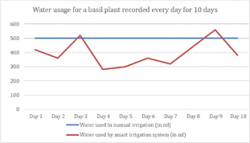
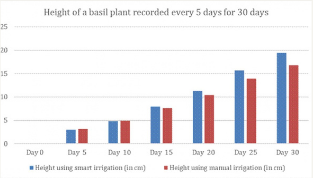

Innovation
It started as a project at Plaksha summer school in May 2024, converted into something more extensive. This project aims to design and build an affordable, automated irrigation system that intelligently dispenses water based on soil moisture levels through IoT. Using Arduino and ESP32 microcontrollers, combined with a soil moisture sensor and water pump, the system monitors soil dryness and activates watering mechanisms accordingly.

